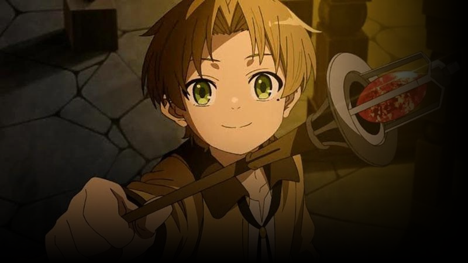

StarFlix
Bridgerton
O foco do enredo é a vida de oito irmãos inseparáveis,
nos anos 1800,que buscam amor e felicidade na alta
sociedade de Londres. Assim como outras produções
de época, com reis, rainhas,condes e príncipes, paira
a dúvida sobre se “Bridgerton” é baseada em
acontecimentos históricos reais.
Lúcifer
A série se desenvolve ao redor de Lucifer Morningstar,
que está entediado e infeliz como o Senhor do Inferno.
Ele enuncia seu trono e abandona seu reinado para
tirar férias em Los Angeles, onde dá início a uma casa
noturna com a ajuda de sua aliada demoníaca,
Mazikeen Smith.

Mushoku Tensei
Isekai Ittara Honki Dasu é uma série de light
novel japonesa de Rifujin na Magonote sobre
um homem desempregado e desesperado que
reencarna em um mundo de fantasia enquanto
guarda suas memórias, determinado a viver sua
nova vida sem arrependimentos.
ATRAVÉS DO ARANHAVERSO
No filme, Miles parte em uma aventura com Gwen Stacy / Mulher-Aranha através do multiverso, onde conhece uma equipe de Pessoas-Aranha conhecida como Sociedade-Aranha, liderada por Miguel O'Hara / Homem-Aranha 2099, mas entra em conflito com eles para lidar com uma nova ameaça intitulada como o Mancha.
Filmes e séries